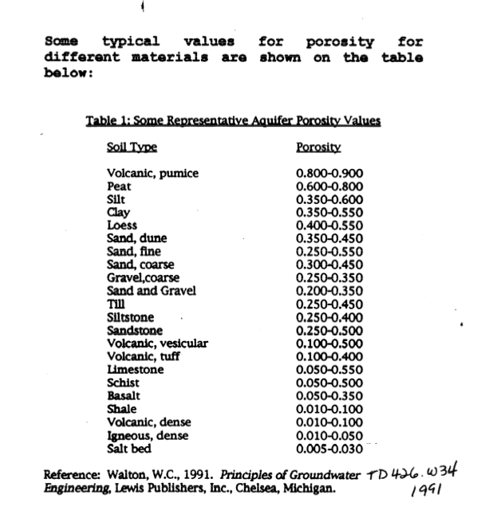
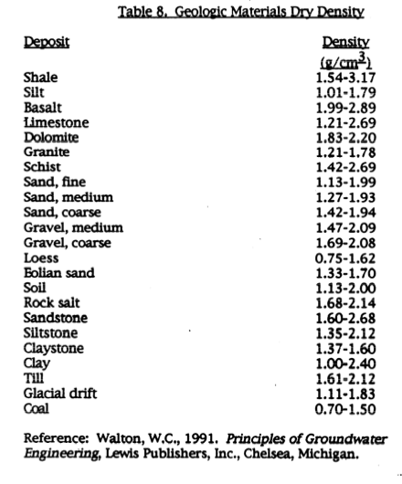
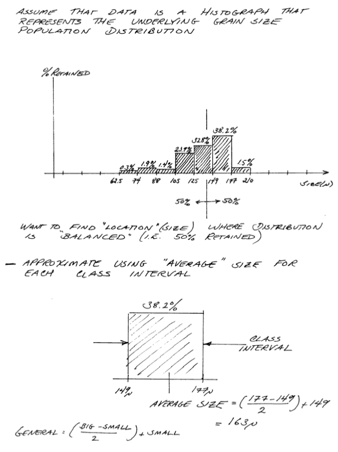

Aquifer Properties - I (pp. 66-93)¶
Density and Specific Weight¶
Usual definition:
\(\rho = \frac{\text{mass}}{\text{volume}} = \frac{m}{V}\)
\(\gamma = \rho g\)
Pressure¶
Usual definition:
\(p = \frac{\text{Force}}{\text{Area}}\) atmospheric, hydrostatic, absolute, gage
Pressure is a normal stress; the concept of effective stress could be interpreted as solids pressure (the force per unit area of the solid phase in porous material)
Viscosity¶
“… a property of a fluid that relates the resistance to motion (in a thin layer) when a shear force is applied…”
Consider a steel sheet that we cut with a shear (like sicssors), if we want to cut fast we need a lot of force; using the same shears on an equal thickness of plastic sheet will take less force for the same rate of cut. This solids analog to viscosity conveys that steel is more viscous than plastic (usually).
{kind=link}
Fig. 1 Viscosity Schematic¶
Fig. 1 Is a diagram attempting to convey the concept of viscosity. In the drawing the thickness \(\partial y\) and the deformation angle \(\partial \alpha\) are small, and the sine of the angle is approximated by the angle itself.

Fig. 2 Viscosity Trigonometry¶
Fig. 2 shows the relevant trigonometry to relate deformation rate to shear stress.
Absolute Viscosity¶
{kind=link}
Fig. 3 Absolute viscosity (definition)¶
Fig. 3 defines a Newtonian fluid and introduces the absolute viscosity \(\mu\) in terms of the thin layer, cross-layer velocity profile \(\frac{du}{dy}\) and the applied shear stress \(\tau\). The viscosity has dimensions of \(\frac{Force \cdot Time}{Area}\)
Apparent Viscosity¶

Fig. 4 Apparent viscosity (definition) power-law model¶
Fig. 4 shows a typical power-law model of viscosity; the term is referred to as an apparent viscosity. Many real fluids are Non-Newtonian and will have some type of viscosity model to explain the deformation behavior.
Kinematic Viscosity¶
The ratio of absolute (or apparent) viscosity to the fluid density is called the kinematic viscosity. The usual symbol is \(\nu = \frac{\mu}{\rho}\) The kinematic viscosity has dimensions of \(\frac{Area}{Time}\)
General Comments¶
Viscous effects cause a velocity gradient (profile) to develop across the fluid layers as shown in Fig. 5.

Fig. 5 Velocity Profile Diagram¶
Fig. 5 is a diagram of the cross-layer velocity profile. The slope of the profile is related to shear force and hence the apparent or absolute viscosity.
Note
The no-slip condition is deduced from experiments - it is an assumption that velocity vanishes at the contact interface; it is quite possible that slip occurs at some scale, however it is a useful and accepted boundary condition.
Viscosity plays a role in groundwater hydraulics principially in the permeability or hydraulic conductivity. Typical symbols are:
\(\mu\) absolute (dynamic) viscosity (see above)
\(\nu = \frac{\mu}{\rho}\) kinematic viscosity
Bulk Modulus¶
Bulk modulus is the reciprocal of the compressibility of a body.
A typical symbol is \(K_B\)
\(K_B = \frac{\Delta p}{\Delta \rho/\rho} = \frac{\Delta p}{\Delta V/V}\)
Materials¶
Rock
Grains
Sediment
All deposited by wind, water, ice, grabity to form porous media, liquids in the void (non-solid phase) space.

Fig. 6 Porous media from sediments (spheres) and fractured rock.¶
Porosity (pp. 74-75)¶
The porosity of a specimen of porous material is the ratio of open pore space volume in the specimen to the bulk volume of the specimen.
{kind=link}
Fig. 7 Porosity of a sample¶
\(n=\frac{V_{void}}{V_{bulk}} \times 100 \%\) Expressed as percent or decimal (\(n=0. \dots\))
{kind=link}
Fig. 8 Dead-end pore attached to interconnected pore space.¶
\(n_e\) is the effective porosity. In groundwater studies one is normally interested in the interconnected, or effective, porosity, which is the ratio of the volume of interconnected pore space - excluding completely isolated pores - to the bulk volume. In most work, the term “porosity” usually refers to the interconnected or effective porosity.
For porous materials the unit volume is comprised of both solid phase and void phase. Density can thus be distinguished as bulk density and solids density.
\(\rho_b = \frac{m_{dry}}{V_{bulk}}\)
\(\rho_s = \frac{m_{dry}}{V_{solids}}\)
\(\rho_b = (1-n)\rho_s\)
Measuring Porosity¶
Usually gravimetric
other methods include:
Calibrated neutron backscatter
Calibrated acoustic propogation
Calibrated resistivity
The Brunauer, Emmett and Teller (BET) technique is the most common method for determining the surface area of powders and porous materials. (Gas absorption technique)
Karl Fischer titration (a water specific reaction, commonly used in food science).
Typical geologic materials (pp. 80-83):

Measuring Solids Density¶
Typically a 50-ml weighting bottle is cleaned and dried, then its mass determined on an analytical balance (\(m_b\)). The bottle filled to the 50-ml mark using a wetting liquid of known density (\(\rho_1\)). The mass of bottle and liquid is again measured (\(m_1\))
The liquid is decanted out, set aside, and again clean and dry the bottle. A sample of solids (at least 3 grams) is weighed (\(m_s\)) then added to the bottle. The bottle is weighed again to account for any losses during the transfer (\(m_2\)). The liquid is slowly added to the bottle to the 50-ml mark, and again the bottle is weighed (\(m_3\)).
Then through the miracle of arithmetic the solids density is
An example is pictured below
The liquid for the measurement should be relatively non-toxic, inert with respect to the solids, and capable of penetrating the pores in the solids (i.e. a wetting fluid with respect to the solids)
For hydrophobic solids, heptane, ethanol, acetone, octanol, and other organic liquids are suitable (need to make measurements quickly as these tend to be pretty volatile). For hydrophyillic solids, deionized water is suitable. Once the solids density is known the bulk density is determined by taking a known volume of solids, drying it, and weighing the dired sample. The weight divided by the apparent volume is the bulk density.
Typical geologic material densities:

Sediment Packing (pp. 75-76)¶
Porosity can be calculated for uniform spheres in different packing structures (Face-centered cubic; body-centered cubic; hexagonal close-packed; …). Porosity ranges from 25% to nearly 50% for different cubic structures. Any chemistry book will discuss cubic packing and unit cells.
If there is a mixture of sizes porosity can decrease as smaller sizes infill the porse space made available by the larger sizes
Sediment Classification¶
Size Classification (pg. 77)
phi-Index (pg. 77)
ASTM Textural Description (pg. 78)
SCS Textural Description
Methods¶
Uniformity coefficient measures how well sorted (single size) or poorly sorted (many sizes) the sample may be
Uses¶
Grain size distributions are useful to estimate permeability in spherical grained porous media
Kozeny-Carman (for sands)
where \(k\) is intrinsic permeability, \(S_0\) is specific surface, and \(n\) is the porosity.
Similar formula based on mean grain diameter
Once the intrinsic permeability is determined the hydraulic conductivtiy is recovered from
Note
No one in their right mind trusts these correlations, but sometimes they can be a useful starting point when no other approach is available.
Example: Estimiting \(k\) from Grain Size Distribution¶
The formula above needs \(d_{50}\) and \(n\)
\(d_{50}\) graphically:
Or using \(\phi\)-index, where \(\phi = -log_2(d)\)


Void Ratio¶
The ratio of void volume to solid volume is called the void ratio.
Really useful with deformable materials
Water Content¶
The volume fraction of water in a sample is called the moisture content or volumetric water content.
The moisture content plays a crucial role in the flow of water in partially saturated media.
Saturation¶
The fraction of pore space occupied by water in a sample is called the volumetric water saturation or the saturation ratio.
The saturation plays a crucial role in the flow of water in partially saturated media.
Specific Yield (pp. 83-86)¶
The specific yield \(S_y\) is the ratio of the volume of water that drains by gravity to total volume of a sample. The specific retention \(S_r\) is the amount left behind.
The two sum to the porosity
Hydraulic Conductivity (pp. 86-95)¶
Darcy’s Law¶

Intrinsic Permeability¶
A measure of the relative ease with which a porous medium can transmit a fluid under a potential gradient and is a property of the medium alone.
Hydraulic conductivity, much like friction factors in pipe flow is comprised of media properties (pore diameter and roughness height) and fluid properties (viscosity and Reynolds number) as:
A common correlation is
with \(C\) being a Hazen coefficient (Some values tabulated on pg. 91).
Same Hazen as in Hazen-Williams head loss equation.
Note
The above formulation is actually an expression of the Hagen–Poiseuille equation for viscous flow in a conduit, where the conduit dimension is the \(d_{10}\) value. But lets just stick to magic and not worry about the underlying mechanics, we cannot easily measure the the por geometry anyway.
Other correlations were already presented above as
Kozeny-Carman (for sands)
where \(k\) is intrinsic permeability, \(S_0\) is specific surface, and \(n\) is the porosity. Specific surface would be obtained by BET adsorbtion isotherm (see porosity above)
A similar relationship (Bear, 1972)
\(K\) ranges over 10 orders of magnitude depending on surface ares, packing, grain size, and porosity type (fractures, or deposition)
{kind=link}
Fig. 9 Hydraulic Conductivity Table from Freeze and Cherry (1979) (sourced from Wikipedia)¶
Measuring Hydraulic Conductivity¶
In lab using devices called permeameters.
Note
A triaxial permeameter accomplishes the same tasks, but attempts to replicate in-situ loads on the sample
Constant Head Permeameter¶
The constant head permeameter is simply a device that exactly duplicates Darcy’s original experiment. A sample is placed in the permeameter and constant head gradient is maintained across the sample. The hydraulic conductivity is inferred by direct application of Darcy’s Law.
{kind=link}
Fig. 10 Constant head permeameter schematic¶
Fig. 10 is a schematic diagram of a constant head permeameter. A sample of porous medium is placed the device. The length of the sample is L, the cross sectional area of the sample is A. The head is measured at the inlet and outlet of the sample. h1 is the head at the inlet of the sample as measured from the outlet of the sample. h2 is the head at the outlet of the sample. Q is the rate of flow through the sample measured by recording the time required for a known volume of water to pass through the sample.
Darcy’s law for this experiment is
Rearranging this equation gives the following formula for hydraulic conductivity;
These computations can be conviently entered into a spreadsheet program. MODEL2_CHPerm.xls is a spreadsheet program that implements these equations for a constant head permeameter.
{kind=link}
Fig. 11 Constant head permeameter analysis spreadsheet¶
Fig. 11 is an annotated image of the spreadsheet showing where to enter data to estimate hydraulic conductivity. To use the program the data is entered for a particular analysis. If intrinsic permeability is to be calculated then the density and viscosity of water should be determined from a tabulation and entered into the spreadsheet.
Falling Head Permeameter¶
The falling head permeameter is used when the hydraulic conductivity of the porous material is small. In this case the constant head permeameter cannot easily generate a high enough gradient to produce measurable flow in a reasonable amount of time.
{kind=link}
Fig. 12 Falling head permeameter schematic¶
Fig. 12is a schematic diagram of a falling head permeameter. A sample of porous medium is placed the device. The length of the sample is L, the cross sectional area of the sample is A. A smaller area tube rises above the sample. This tube provides the driving force required to move water through the porous sample with reasonably small water volume. The area of this tube is a. The head is measured at the inlet of the sample as the height of water in the tube above the sample, h(t). Q(t) is the varying rate of flow through the sample.
Note
In a falling head permeameter, both the head and the flow rate vary with time.
The analysis is a bit more complicated
MODEL3_FHPerm.xls is a spreadsheet program that implements the falling head equations.
{kind=link}
Fig. 13 Falling head permeameter analysis spreadsheet¶
Fig. 13 is an annotated image of the spreadsheet showing where to enter data to estimate hydraulic conductivity. To use the program the data is entered for a particular analysis. If intrinsic permeability is to be calculated then the density and viscosity of water should be determined from a tabulation and entered into the spreadsheet.